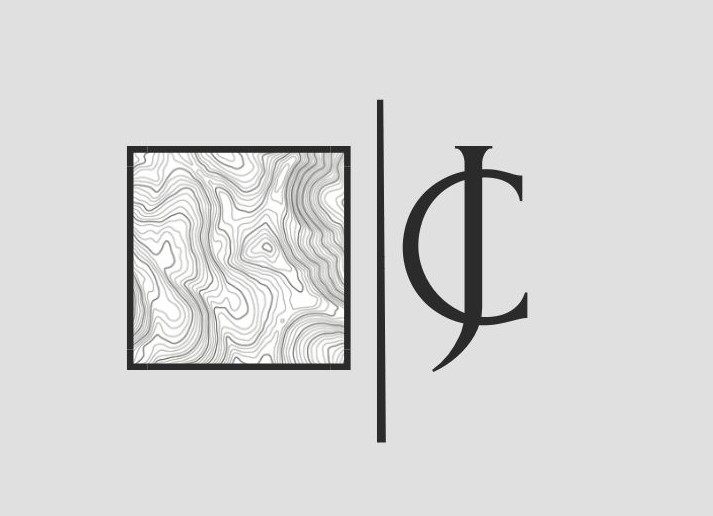

PREDICGEO CONSULTORES
Mapeamos realidades, formamos capacidades, construimos el futuro
Inicio
Sobre nosotros ▾
¿ Quiénes somos?
Misión
Visión
Servicios ▾
Topografía
Fotogrametría con Drones
Geodesia GPS/GNSS
Cartografía
Trámites Municipales
Capacitaciones ▾
ArcGIS Pro
QGIS
Chatea con nosotros 📱